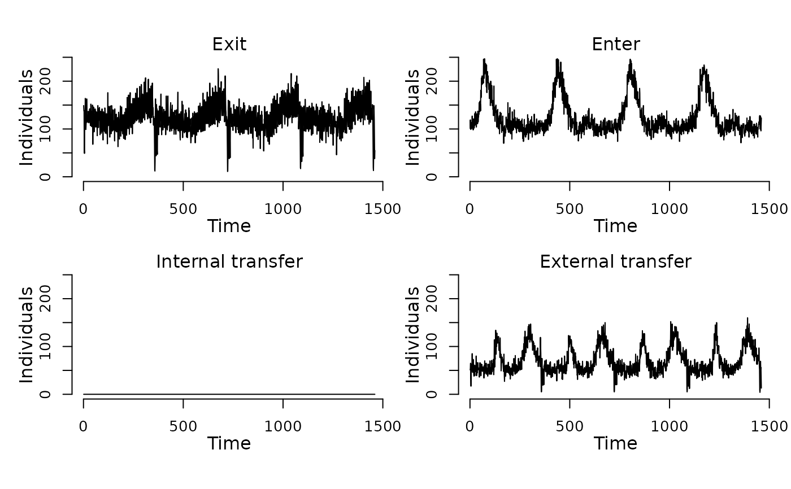

Example data to initialize scheduled events for a population of
1600 nodes and demonstrate the SIS model.
Details
Example data to initialize scheduled events (see
SimInf_events) for a population of 1600 nodes
and demonstrate the SIS model. The dataset
contains 466692 events for 1600 nodes distributed over 4 * 365
days. The events are divided into three types: ‘Exit’
events remove individuals from the population (n = 182535),
‘Enter’ events add individuals to the population (n =
182685), and ‘External transfer’ events move individuals
between nodes in the population (n = 101472). The vignette
contains a detailed description of how scheduled events operate on
a model.
Examples
## For reproducibility, call the set.seed() function and specify
## the number of threads to use. To use all available threads,
## remove the set_num_threads() call.
set.seed(123)
set_num_threads(1)
## Create an 'SIS' model with 1600 nodes and initialize
## it to run over 4*365 days. Add one infected individual
## to the first node.
u0 <- u0_SIS()
u0$I[1] <- 1
tspan <- seq(from = 1, to = 4*365, by = 1)
model <- SIS(u0 = u0,
tspan = tspan,
events = events_SIS(),
beta = 0.16,
gamma = 0.01)
## Display the number of individuals affected by each event type
## per day.
plot(events(model))

## Run the model to generate a single stochastic trajectory.
result <- run(model)
plot(result)
## Summarize the trajectory. The summary includes the number of
## events by event type.
summary(result)
#> Model: SIS
#> Number of nodes: 1600
#>
#> Transitions
#> -----------
#> S -> upsilon*S*I -> I
#> I -> gamma*I -> S
#>
#> Global data
#> -----------
#> Number of parameters without a name: 0
#> - None
#>
#> Local data
#> ----------
#> Parameter Value
#> beta 0.16
#> gamma 0.01
#>
#> Scheduled events
#> ----------------
#> Exit: 182535
#> Enter: 182685
#> Internal transfer: 0
#> External transfer: 101472
#>
#> Network summary
#> ---------------
#> Min. 1st Qu. Median Mean 3rd Qu. Max.
#> Indegree: 40.0 57.0 62.0 62.1 68.0 90.0
#> Outdegree: 36.0 57.0 62.0 62.1 67.0 89.0
#>
#> Compartments
#> ------------
#> Min. 1st Qu. Median Mean 3rd Qu. Max.
#> S 0.0 7.0 10.0 44.2 96.0 218.0
#> I 0.0 0.0 96.0 80.3 125.0 228.0